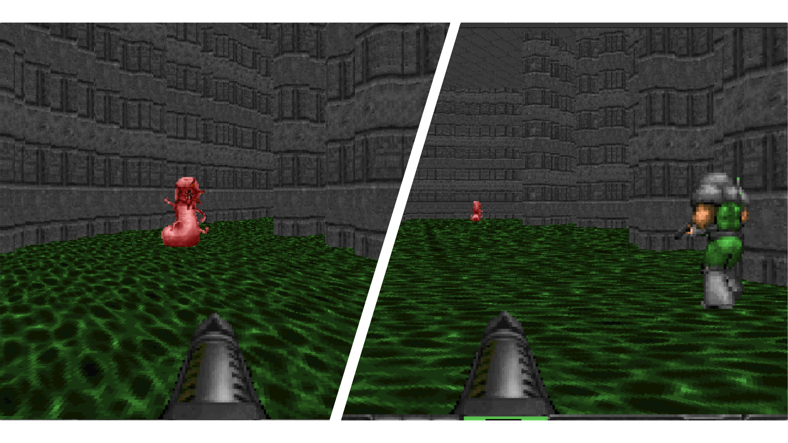

COMRAD: A Benchmark for Embodied
Multi-Agent Reinforcement Learning
Abstract
13 Cooperative Scenarios
Agents must coordinate solely based on their local visual observations in a 3D first-person egocentric view.





Methodology
High-throughput infrastructure, procedural generation, and curriculum learning form the backbone of COMRAD.
Training Architecture
COMRAD integrates with Sample Factory, enabling highly parallelized asynchronous RL that achieves ~25K FPS during training. A high-level overview of the architecture is provided below.


DoomGen
DoomGen procedurally generates diverse map layouts, preventing policies from overfitting.

Curriculum Learning
Automated Curriculum Learning (ACL) progressively increases task complexity to stabilize multi-agent credit assignment.


Results
Performance comparison of 7 established CTDE baselines across the 13 COMRAD scenarios under a 100M-step budget.


Agent Trajectory Heatmaps
Visualizing the spatial coordination and division of labor between agents.
Behavioral Analysis: Ammo Carrier
Objective: Ammo Carrier is a fixed-role asymmetric defense task. One immobilized defender must hold the hub against enemies, while a mobile runner sustains a depot-to-hub resupply loop. The challenge lies in learning a stable, long-horizon logistics routine with delayed, role-specific payoffs.
IPPO (Left): A decentralized update allows the runner to independently optimize its loop without cross-agent interference. As seen above, IPPO concentrates movement along a recurring depot-to-hub corridor, successfully learning the required role-specialized logistics behavior.
HAPPO (Right): Centralized training creates counterproductive coordination pressure. The runner's gradient updates are influenced by the defender's value signal, causing it to abandon the logistics routine to move toward the defender or visit depots irregularly. This leads to episodic ammo starvation and significantly lower survival times.
Citation
@inproceedings{
nguyen2026comrad,
title={{COMRAD}: A Benchmark for Embodied Cooperative Multi-Agent Reinforcement Learning},
author={Khoi H.B. Nguyen and Dimitar Zhivkov Zhekov and Tristan Tomilin},
booktitle={New Frontiers in Game-Theoretic Learning - NExT-Game},
year={2026},
url={https://openreview.net/forum?id=bXau6dlyV4}
}